Original procedural models. Previews are projected directly from authored model triangles, not stock photos.
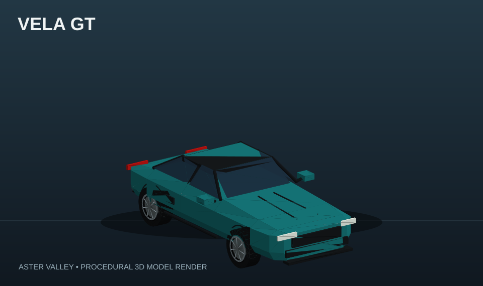
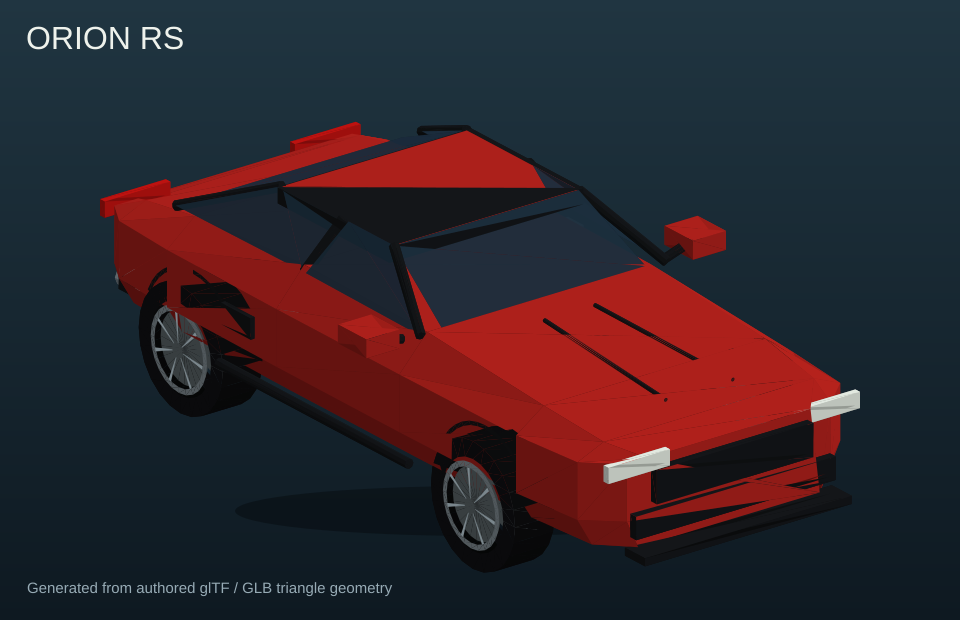
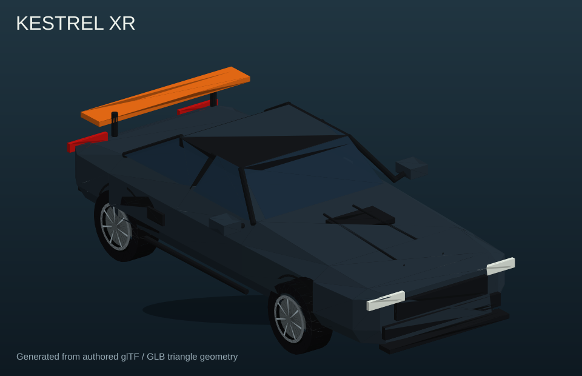
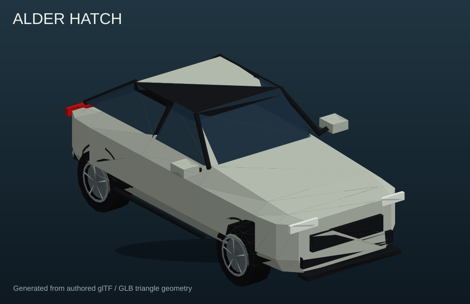
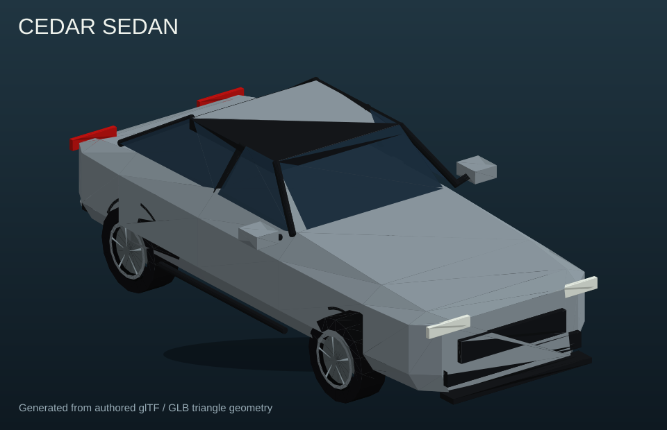
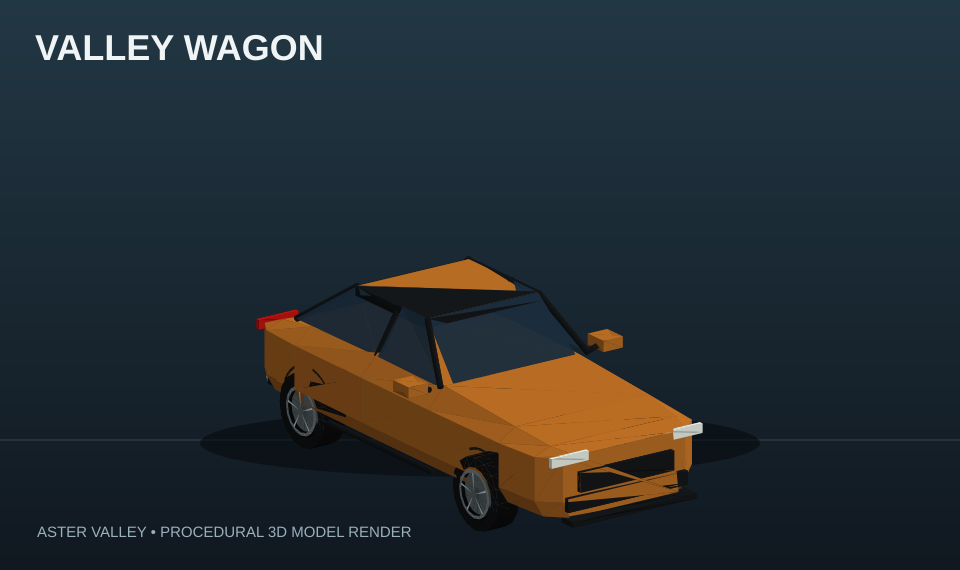
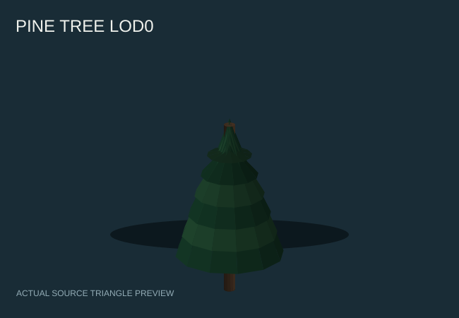
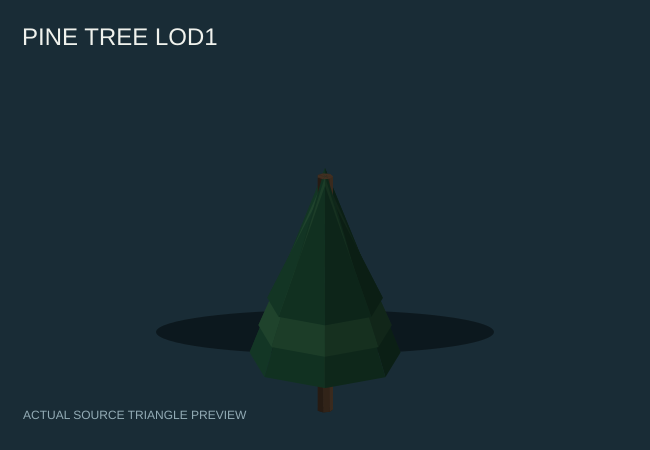
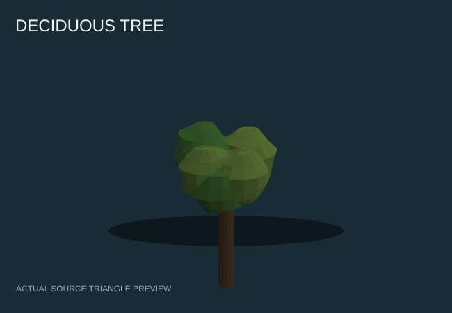
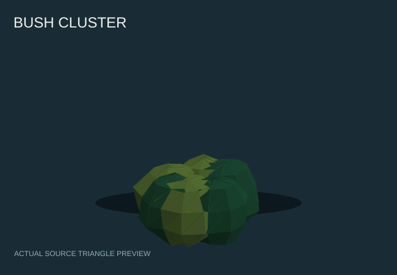
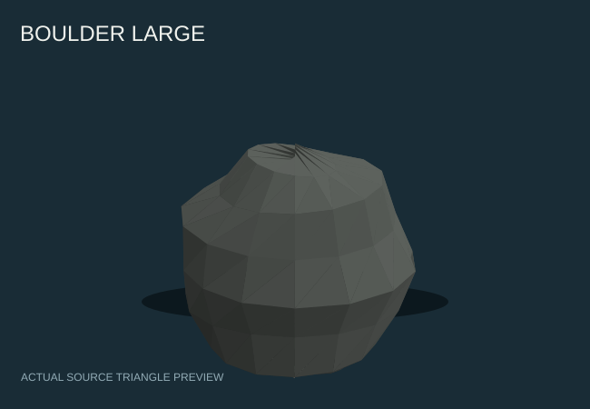
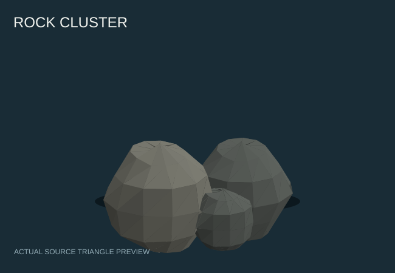
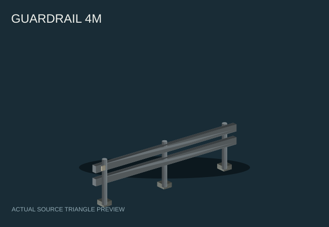
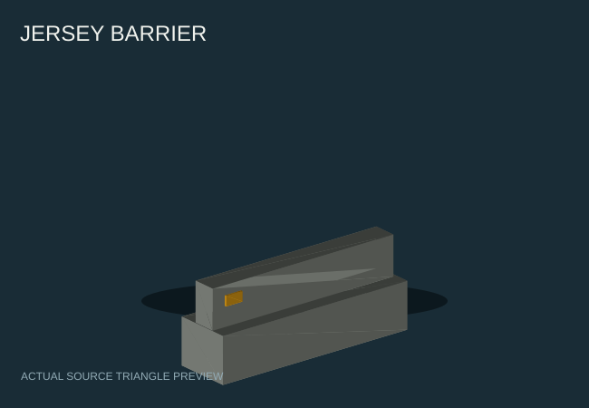
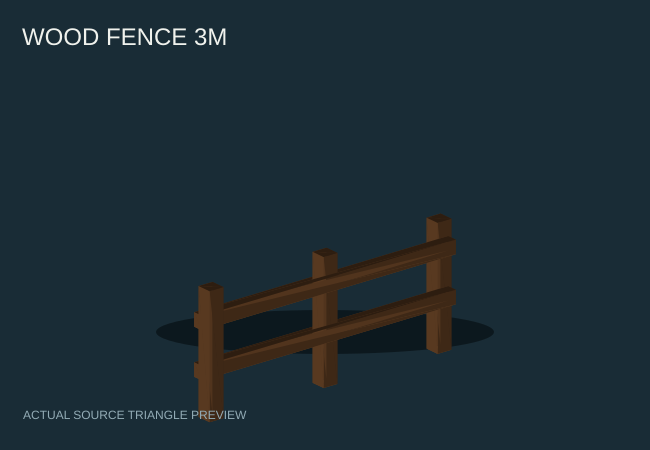
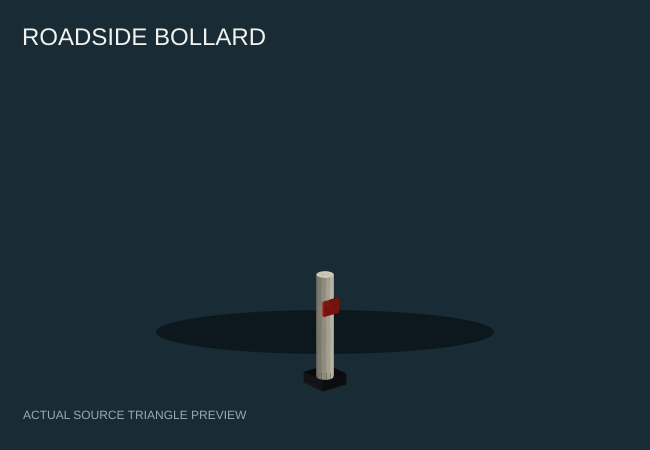
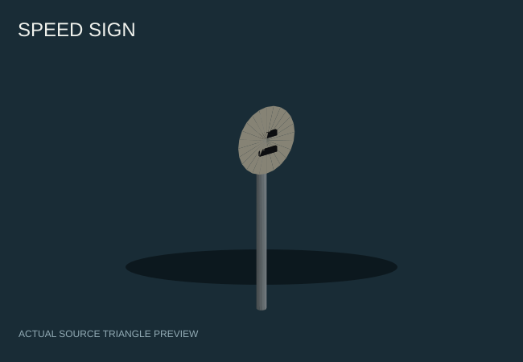
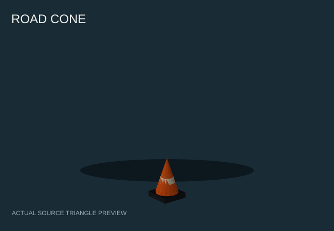
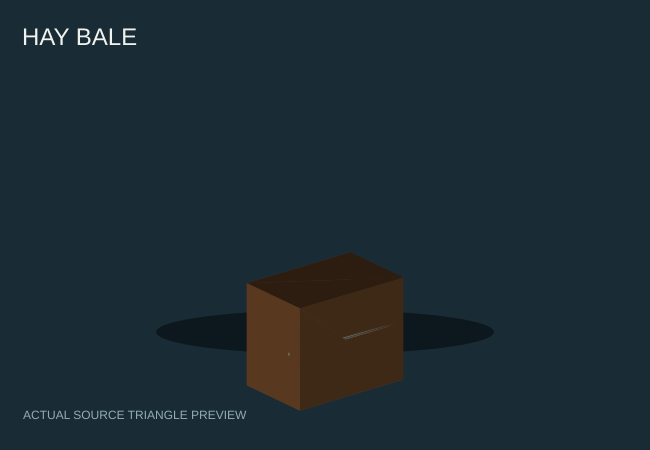
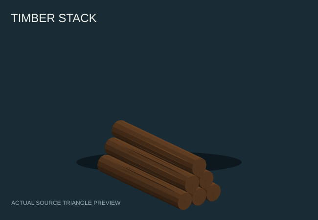
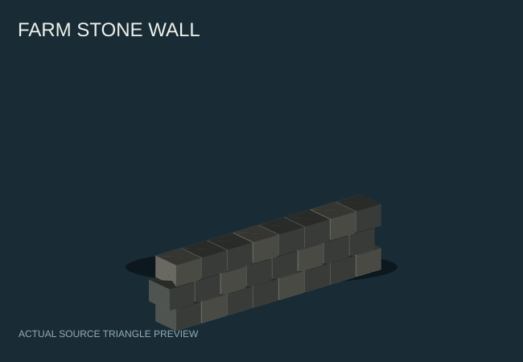
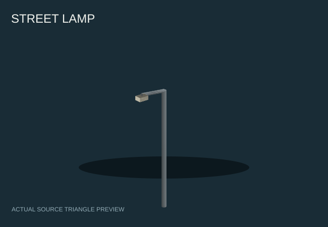
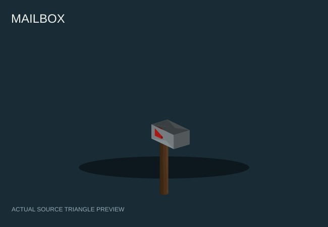
Open this file from a local repository checkout to inspect the whole collection.